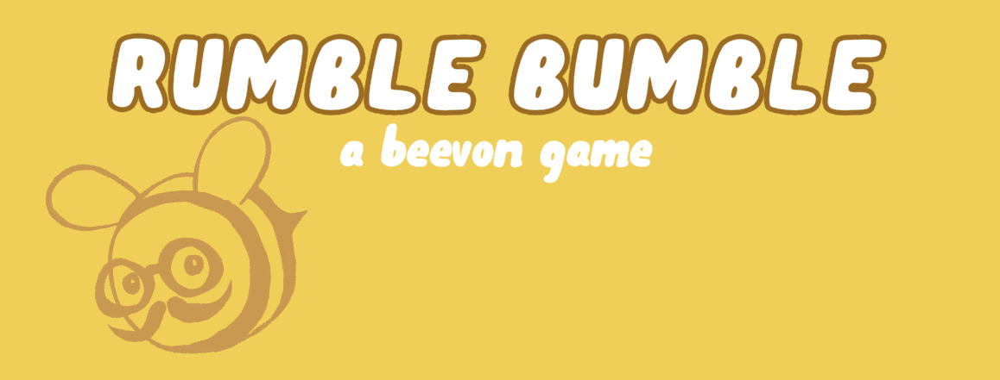

Rumble Bumble, a Beevon adventure is a tiny collecting game created by Janine Recio and Elena Tchijakoff in two days during Gamerella 2019. It stars Beevon, a hipster bee with a swanky mustache and fancy glasses.
The game requires an alternative controller to play. It consists of a Squishable brand bee plush and an Iphone strapped underneath. This all holds together precariously with the help of a rubber band. The game uses the accelerometer inside the phone the control Beevon's movements in game. Since Apple products do not play nice with Windows, the game is based on a hacky technique. Using the Unity Remote 5 app, we get our inputs from the phone directly connected to the computer via USB. To get the app working on Iphone, the project build target is Iphone/Ipad. The technique also requires Itunes to be installed on the computer. 
The goal on the game is to collect as much honey as you can in 60 seconds. To do so, you must fly around a field of flowers. You fly by tilting the bee towards where you want to go. The bee cannot go backward, tilting the bee that direction will only make it stop moving. You can shake the bee when you hover over a flower to get a pollen point. You must physically shake the bee. In the real world. Once you have pollen points, you can deposit them in the hive to convert them in honey points. You final score is your total honey points. There are some modifiers : some special flowers which are worth 3 pollen points, and vines which make you lose all your pollen on contact The position of flowers and vines is randomly generated every time you deposit pollen into the hive or run out of flowers
Daniel Swieca for his advice on Unity Remote Jess Marcotte for their help with alternative controllers The Gamerella staff and vonlunteers for the moral support (and snacks!) during the jam Enric Llagostera for teaching me how to properly archive a weird game like this